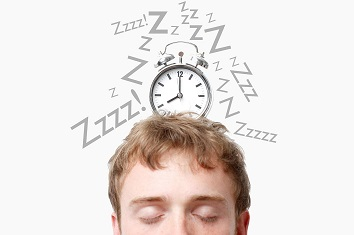

La importancia del Sueño
Bien es sabido que la rutina del ser humano ha cambiado a pasos agigantados junto con el desarrollo tecnológico. La forma y la velocidad
a la que vivimos son totalmente diferentes a la de nuestros abuelos, y esto puede estar jugándonos una mala pasada; en los últimos años
las demencias se han multiplicado. En 2017 ya se contabilizaban 1,2 millones de personas con esta enfermedad. Las alteraciones del
sueño son un factor relacionado sobre el que se está estudiando actualmente. En el sueño hay múltiples situaciones que pueden provocar
desequilibrios: la luz blanca, estrés, cenas tardías, medicamentos y consumos estimulantes

Las consecuencias no sólo se reflejan en las deficiencias neurológicas (menor atención, función y memoria a largo plazo), también se
relacionan con procesos de ganancia de peso. Ya que, con la privación, restricción o falta de sueño, se detecta más apetito, antojos
y mayor ingesta calórica por parte del afectado.
Descanso Adecuado

Es el estado momentáneo de reposo, tranquilidad o inactividad, que se realiza en medio del o de otra actividad para reponer fuerzas físicas,
mentales y espirituales.Parte de un Descanso Adecuado es tener un sueño reparador que te permita la renovación de tu cuerpo y mente. Además
del sueño el Descanso Adecuando incluye hacer pausas en tus actividades diarias, las cuales te ayudan a pensar de manera más precisa y clara.
Por ende te desempeñarás mejor.
Dormir bien significa hacerlo al menos 7 horas seguidas sin interrupciones, aunque lo ideal es descansar entre 8 y 10 horas. De esta forma
nos sentiremos renovados cada mañana. El problema es que solemos adoptar malos hábitos antes de irnos a la cama lo que hace que no conciliemos
un sueño reparador.
¿Qué necesitas para lograrlo?
La clave está en realizar ciertas prácticas saludables antes de irnos a dormir, que pueden parecer insignificantes, pero ayudan un montón a
conciliar el sueño y dormir de corrido toda la noche:
- Cenar de forma apropiada
- Evitar la cafeina antes de acostarnos
- Suspender los aparatos electrónicos en la habitación
- No hacer actividad física antes de dormir
- Tener una buena almohada y colchón